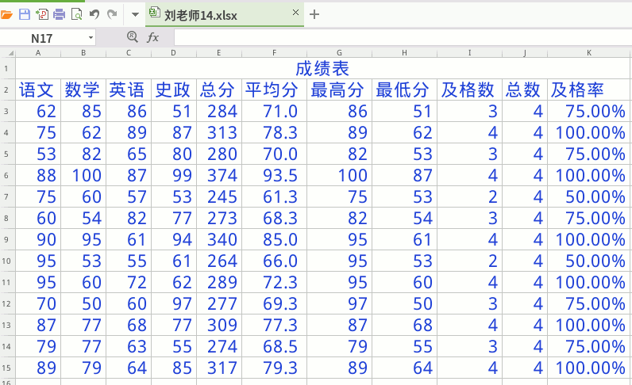

2、输入四门学科的表头，语文、数学、英语、史政；
3、成绩用随机函数，RANDBETWEEN，50~100；
4、向下自动填充到15行；
5、总分用求和函数，SUM， 框住四门课的总分；
7、平均分函数用 AVERAGE，框住四门课的平均分；
8、右键，设置单元格格式，数值，一位小数；
10、最高分是 MAX 函数，框住四门课，最低分是 MIN 函数；
11、及格数是 COUNTIF 函数，区域里框住四门课，条件是 ">=60"；
12、总数也是 COUNTIF，框住四门课，条件是 ">=0"；
13、及格率是除法公式，等号开头，用及格数除以总数，
记住是小的除大的；